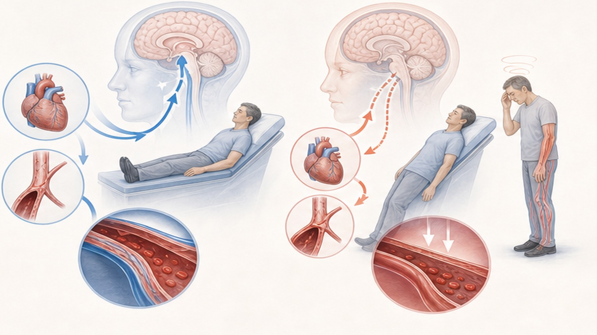
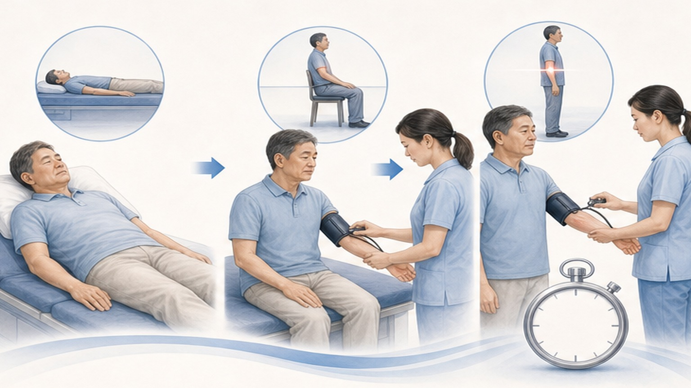
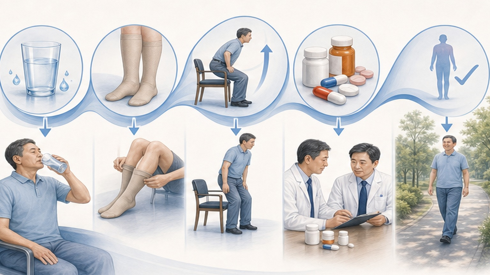

고령 외래에서 어지럼·낙상 호소가 늘고, 기립성 저혈압(OH)은 그 흔한 원인 중 하나다
고전형 + 3가지 변이형 — 시간축과 심박수 반응으로 구분한다
| 유형 | 시점 | 기준 · 특징 |
|---|---|---|
| 고전형(Classical OH) | 3분 이내 | 수축기 20 mmHg 이상 또는 이완기 10 mmHg 이상 하강. 누운 자세 고혈압이 있으면 수축기 30 mmHg 이상 하강을 기준으로 적용. |
| 초기형(Initial OH) | 15초 이내 | 수축기 40 mmHg 이상 또는 이완기 20 mmHg 이상 하강 후 빠르게 회복. 젊은 성인에 흔하며 능동 기립 검사로만 잡힌다. |
| 지연형(Delayed OH) | 3분 이후 | 3분 뒤에 혈압이 떨어지는 형태. 자율신경부전 초기 단계로 알려져 있고, 신경성 OH·시누클레인병으로 진행할 수 있다. |
| 체위성 빈맥(POTS) · 누운 자세 고혈압 동반 OH | 기립 · 누움 | POTS = 혈압 하강 없이도 기립 시 심박수 30 bpm 이상 증가. 누운 자세 고혈압 동반 OH = 누우면 수축기 140 이상이면서 기립 시 OH 기준 충족. |
기립 때 작동해야 할 보상 반사가 무너지는 곳에서 OH가 시작된다

치료 방향이 달라진다 — 원인 갈래를 먼저 정한다
5분 휴식 → 기립 직후 → 1분 → 3분, 네 시점의 혈압·심박수를 기록한다

약물 검토는 비용 0의 가장 효율 높은 중재 — 6개 범주를 빠르게 훑는다
약물보다 먼저, 약물과 함께 — 6가지 핵심
비약물 + 약물 검토에도 증상이 계속되면 — 1 → 2 → 3단계, 또는 병용
| 단계 · 약 | 용량 · 시간 | 작용 · 주의 |
|---|---|---|
| ① 플루드로코르티손 | 0.1–0.2 mg 하루 1회(아침, 식사와 함께) | 혈장 용적↑ · 칼륨·혈압·부종·BNP 감시 · 심부전·중증 만성콩팥병 금기 |
| ② 미도드린 | 2.5–10 mg 하루 3회 · 식전 30분·활동 전 | α1 작용제(혈관수축) · 마지막 복용은 취침 4시간 전 — 누운 자세 고혈압 피하려 시간 엄수 |
| ③ 드록시도파 | 100–600 mg 하루 3회 | 노르에피네프린 전구체 · 신경성 OH(파킨슨병·MSA) · 미국 FDA 승인(2014), 한국 가용성 제한 |

가장 까다로운 상황 — 낮 혈압을 올리려다 밤 혈압을 더 올린다
교과서적 진단 흐름 + 약물 검토 우선의 실무 적용 예
노인 외래에서 OH는 흔하고, 진단·치료의 효율은 약물 검토가 가장 크다